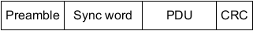
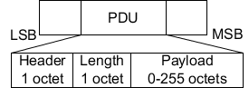

The following packet format is defined for the LE uncoded PHYs and is used for test packets.

Each packet consists of four mandatory fields: preamble, access address (sync word for test packets), PDU, and CRC.
Physical layer | Preamble (octets) | Sync word (octets) | PDU (octets) | CRC |
|---|---|---|---|---|
LE 1 Msymbol/s | 1 | 4 | 2 to 257 | 3 |
LE 2 Msymbol/s | 2 | 4 | 2 to 257 | 3 |
The preamble is transmitted first, followed by the sync word, followed by the PDU followed by the CRC. The entire packet is transmitted at the same symbol rate.
Packets take between 44 μs and 2120 μs to transmit.
The following packet format is defined for the LE coded PHY and is used for test packets.

Each packet consists of the preamble, FEC block 1, and FEC block 2. The preamble is not coded. The FEC block 1 consists of three fields: access address (sync word for test packets), coding indicator (CI), and TERM1. These fields use the S=8 coding scheme. The CI field determines which coding scheme is used for FEC block 2. The FEC block 2 consists of three fields: PDU, CRC, and TERM2. These fields use either the S=2 or S=8 coding scheme, depending on the value of the CI field.
The entire packet is transmitted with 1 Msymbol/s modulation. The following table captures the size and duration of the data packet fields.
Preamble | Sync word | CI | TERM1 | PDU | CRC | TERM2 | |
|---|---|---|---|---|---|---|---|
Number of uncoded bits | 80 | 32 | 2 | 3 | 16 - 2056 | 24 | 3 |
Duration in µs for S=8 coding | 80 | 256 | 16 | 24 | 128 - 16448 | 192 | 24 |
Duration in µs for S=2 coding | 80 | 256 | 16 | 24 | 32 - 4112 | 48 | 6 |
Packets take between 462 μs and 17040 μs to transmit.
The R&S CMW supports LE test packets RF_PHY_TestRef. The PDU of a test packet is subdivided into a header, length indicator and the payload field.

LE test packets are described in the section 4 LE Test Packet Definition in core specification for Bluetooth wireless technology, volume 6, part F.